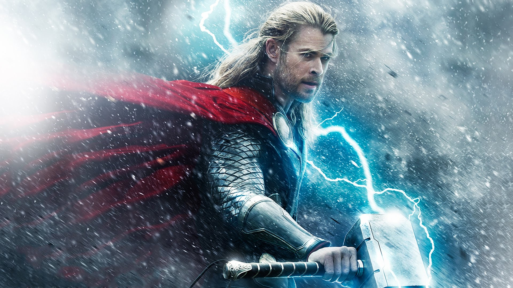

Thor, the famous God of Thunder from Norse myth, once thought to be a legend, is very much real. As the God of Thunder, he can control the weather with his enchanted mallet, Mjolnir. He is also superhumanly strong, able to lift upwards of 100 tons. Thor has travelled around the world saving lives from criminals with his team, the Avengers. He is interested in becoming a doctor, as his crush Jane Foster is interested in one.
| Year | Job |
|---|---|
| 2019 | Defeated Thanos |
| 2017 | Defeated Hela |
| 2015 | Defeated Ultron |
| 2013 | Defeated Malekith |
| 2012 | Defeated Loki |